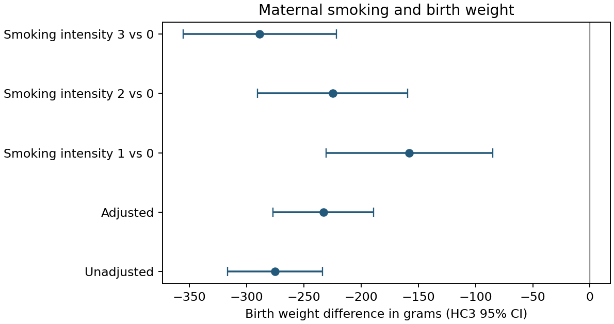

What the groups looked like
I checked that the binary smoking indicator agreed with the recorded intensity categories: code 0 meant no reported smoking, and codes 1–3 indicated increasing levels of reported smoking. The analysis used the same 4,642 complete records throughout (864 with reported smoking and 3,778 without).
The original birth weight histograms showed considerable overlap, with the distribution for the smoking group shifted toward lower weights. That group was also younger on average, had fewer years of education, was less often married, and reported alcohol use more often. Those differences gave me a reason to look beyond the raw comparison.
What I adjusted for and why
I used a directed acyclic graph (DAG) to map how maternal age, race, education, marital status and alcohol use could be related to both smoking and birth weight. I included those five variables in the adjusted models.
I left prenatal care out of the model because the graph allows it to occur along the pathway from smoking to birth weight. Controlling for it could remove part of the association I wanted to examine.

Where the groups were hard to compare
Every education-by-race group had mothers who reported smoking and mothers who did not. Among those with 16 or more years of education, only 3.9%–4.8% reported smoking across the two recorded race categories. With so few smokers in these groups, adjustment relies more on the model. This check covers two covariates and leaves overlap across all five uncertain.
How much the estimate changed
The estimated difference moved 42 g closer to zero after adjustment. Both models used the same records, so the change reflects the covariates included in the model.
| Model | Difference | HC3 95% CI |
|---|---|---|
| Unadjusted | −275 | −317 to −234 |
| Adjusted | −233 | −277 to −189 |
Smoking intensity
Using no reported smoking as the reference, adjusted estimates were −158 g, −225 g and −289 g for levels 1, 2 and 3. The association was larger at higher recorded levels. Differences in who smoked at each level, and the coarse exposure categories, limit any causal dose-response interpretation.


What the models can tell us
The adjusted difference is an observational association. A causal interpretation would require comparable groups after adjustment, meaningful overlap, and a well-defined exposure. Unmeasured factors such as nutrition or stress can still matter, and the smoking codes do not capture timing or duration.
The coursework included the DAG, descriptive checks and both regressions. The September 2026 analysis used a common cohort and HC3 intervals. Revision history.